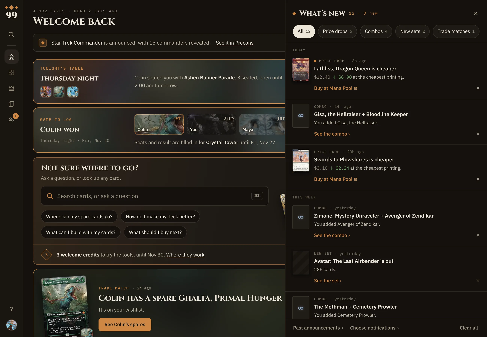
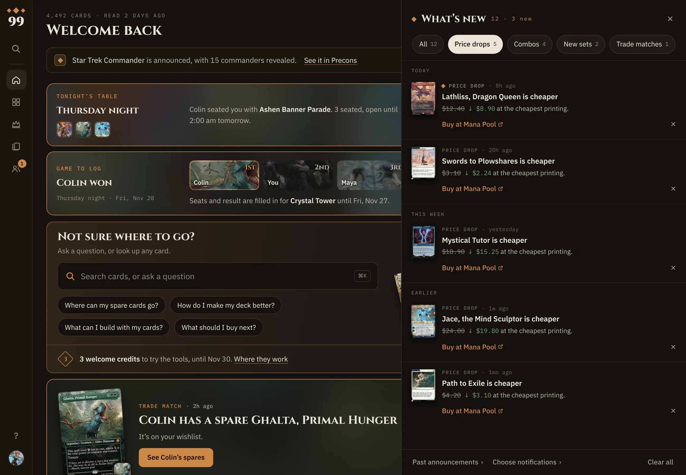
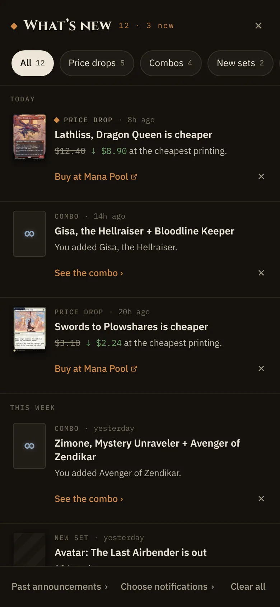
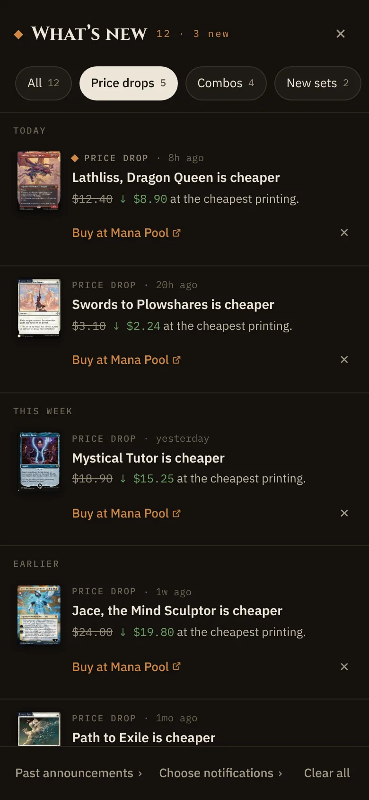

Twelve items. The rail keeps five; Show all 12 opens the sheet. Drawn open on All, and filtered to Price drops.
13 · What's new, Show all (R10)
Q15 · Show all: a sheet, or expand in place?
Recommended: A. Home keeps its shape however many items there are, and the chips make 10+ items quick to sort.

Show all · All
The sheet over Home; Today, This week, Earlier.

Show all · Price drops
A chip filters; the groups keep their order.

Show all · All
Full screen; the chips scroll sideways.

Show all · Price drops
Filtered.